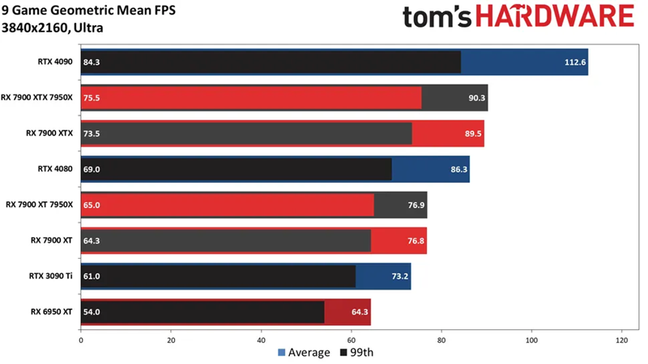
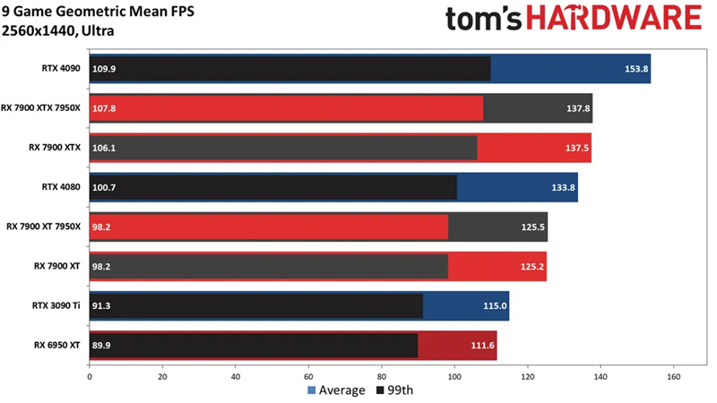
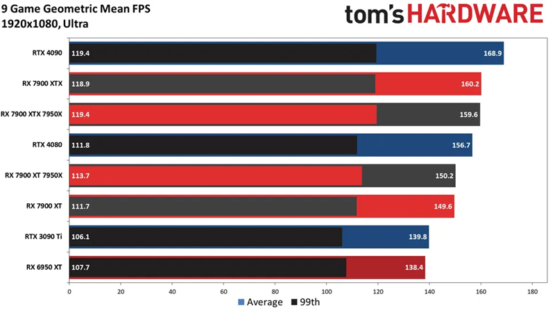

AMD 7900 XTX Performance in 4K
Thanks to tom's Hardware for the graph. Click the image to go to tom's Hardware website for the full
review.
The 7900 XTX is heavily outclassed by Nvidia's 4090, however it beats the 4080 by around 4% on
average. However although the 7900 XTX is outclassed by the 4090, it is 60% cheaper.
AMD 7900 XTX Performance in 1440p
Same performance compared in 1440p compared to 4k, the 4090 outclasses every GPU on the market. However, the 7900 XTX still beats the 4080 in pure rasterization.
AMD 7900 XTX Performance in 1080p
Yet again, same metrics compared to 4k and 1440p. However, the dominant gap of the 4090 is lessened in 1080p due to the resolution becoming more CPU dependant rather than the GPU.
My Thoughts
All in all, the 7900 XTX is a very competitve card versus Nvidia's line of top end GPU's. Although
being outclassed by the 4090, the 7900 XTX is signifcantly cheaper, and outclasses and of Nvidia's
4080 Super and below GPU's.
That is, if you're looking for pure rasterized gameplay, AND don't care about ray tracing, AMD and
the 7900 XTX is the way to go.